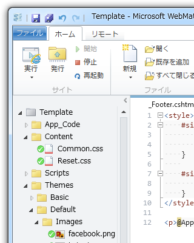

WebMatrix + ASP.NET Web Pages でキレイにコーディングしたい（4）
公開日：
今見返してふと思ったのは、比較的簡単にテーマ機能なんかを実装できるなということ。ただデザインを変えたいがために、毎回一からこんなの作るのはアホらしい。
というわけで、今回はテーマ機能を（試しに）作ってみた。

- “~/Themes/”フォルダにテーマフォルダを作成（今回は Basic と Default）
- それぞれのテーマフォルダにレイアウトファイル、スタイルシート、リソースなどをまとめる
- “App.Theme”にテーマフォルダの名前を入れれば、サイト全体のテーマが切り替わる
カッコいいか悪いかは知らないけど、とりあえず書いてみた。
# _AppStart.cshtml@{ /* Configure App Setting */ App.Theme = "Default"; }
@using System.IO;
@{ /* Define Utilities */ const string ThemeBaseDir = "~/Themes/"; const string ThemeLayoutFile = "_Layout.cshtml";
App.GetThemePath = new Func<string>(() => VirtualPathUtility.ToAbsolute( Path.Combine(ThemeBaseDir, App.Theme) ) );
App.GetLayoutPath = new Func<string>(() => VirtualPathUtility.ToAbsolute( Path.Combine(ThemeBaseDir, App.Theme, ThemeLayoutFile) ) ); }
“~/Themes/”を絶対パスへ変換するには、“VirtualPathUtility.ToAbsolute()”を使えばいいみたい。
# _PageStart.cshtml
@{
Layout = App.GetLayoutPath();
Page.Title = Page.Title ?? "Untitled Page";
}
さっき定義した関数の使い方はこんな感じ。これでページを読み込むときにテーマが適用されると思う。やろうと思えば、 Themes フォルダ内のテーマフォルダを列挙して*1、ブラウザーから動的にテーマを変更する、といったこともできないこともない気がする。
<link rel="stylesheet" href="~/Content/Reset.css" /> <link rel="stylesheet" href="~/Content/Common.css" /> <link rel="stylesheet" href="@App.GetThemePath()/Styles/Main.css" />
レイアウトファイルでリソースを読み込むとき、テーマフォルダのパスを知るにはこんな感じで使う。けれど、これだと IntelliSense の助けが得られないな。無理して App に Theme 関連の変数や関数が属すようにせず、 Static な Theme クラスを作って、そっちで管理するほうがいいかもしれない。
スタイルシートは、
- ~/Content/Reset.css：ブラウザー依存のレイアウトのリセット。適当なライブラリを使えばいいと思う。
- ~/Content/Common.css：テーマに関係ない共通のスタイルを記述。 Reset.css の不満なところを書き換えたりとか*2。
- テーマフォルダのスタイルシート
という順で読み込んでいくようにしてみた。なるべく分けて、論理的にやらないと、あとからだんだん訳がわからなくなってくる……